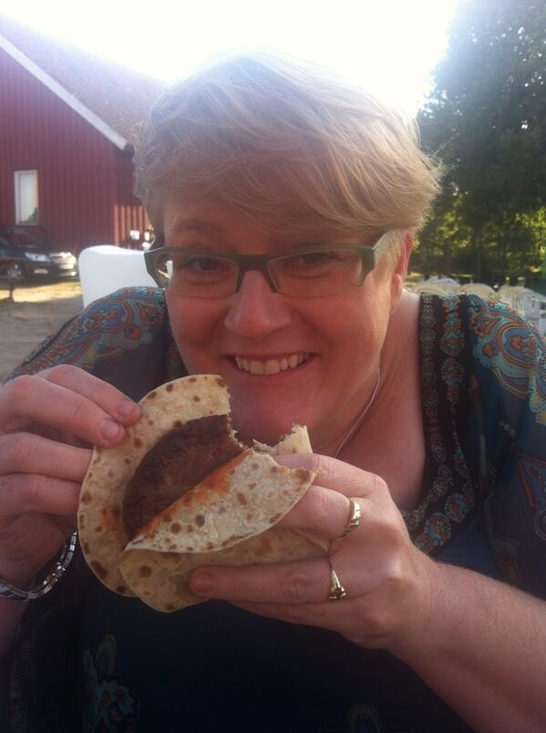
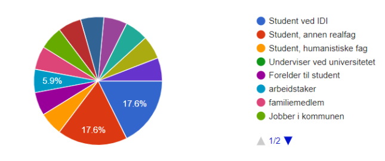
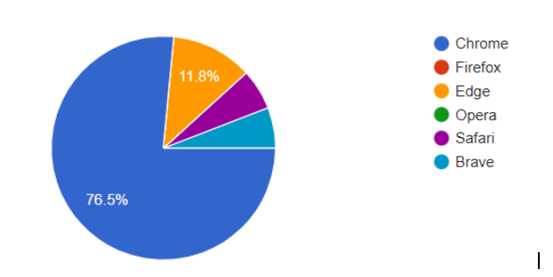
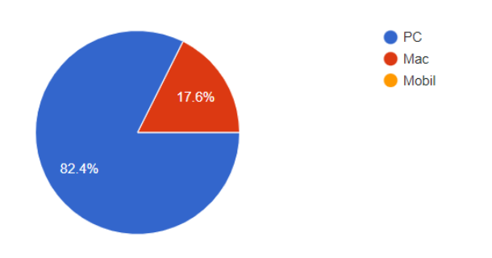

P1 Project Requirements

Vebjørn, Trym, Frederik, Erik og Erik
Administrativt
Klientens navn: Trine-Berit Kantine
Posisjon i organisasjonen: CEO av Trines Kantine
Testdokument
Vi lagde en google form med ganske generelle spørsmål. Vi samlet informasjon om hvem som svarte, samt enheten og nettleseren som ble brukt. Videre spurte vi om hva testerne syntes om det visuelle designet, navigasjonsstrukturen, oppdagede problemer, ønskede forbedringer og andre kommentarer.
I tillegg fikk vi noen av testerne til å dele skjerm, mens de testet nettsiden slik at vi kunne få en grundigere tilbakemelding.
Link til Google Forms: https://docs.google.com/forms/d/e/1FAIpQLScAcBtsA6k9jUn3R9SpaEa-i4XLfbkHuLJEVcUWr8kxURqEvA/viewform?usp=sf_link
Data
Testere
Største testgrupper:
Student ved IDI: 17.6%
Student, annen realfag: 17.6%
Annet (ink andre studenter): 64.8%

Nettleserfordeling

Enhetsfordeling

Tilbakemeldinger
Visuelt design
De fleste var godt fornøyd med det visuelle, og vi fikk generelt veldig gode tilbakemeldinger.
En person mislikte fargepaletten, og syntes det ikke burde være skygger bak infoboksene. Var også flere som mente det var godt fargevalg.
En annen kommenterte “Syns avrundingen på flere av boksene er litt for smooth og det burde vært litt mer uniformt.”
Fikk også tilbakemelding på at meny-siden ser ut som en bensinstasjonsmeny og at alt har 2015-preg. Dette er vi egentlig storfornøyde med.
Det var også et par kommentarer på lav bildekvalitet, men også en som mente det var for høy.
Navigasjon
94.1% av testerne synes navigasjonen på siden var intuitiv.
Resterende ga ikke noen videre forklaring på hvorfor de ikke synes det.
Oppdagede problemer
- Reservasjonssiden var ikke knyttet til en dato eller et tidspunkt
- Syyykt flatbrød fantes ikke på menyen
- Google maps lastet med en feilmelding
- Bestillingssiden aksepterer tekstinput
- Mulig å legge inn en bestilling uten å ha valgt noen varer
- Ingen av sosiale medier linkene funker
- Utløpsdatoen til kortet kunne være utgått
- CVCen kunne være mer enn 3 siffer langt
- Logo er veldig blurry
- Kan ikke copy paste kontaktinfoen på “om oss”
- Når jeg velger å betale med vipps, må jeg fortsatt skrive inn kortnummer for å betale.
Ønskede forbedringer
- Timeren ved banneren burde kanskje resettes når man klikker seg bortover den
- "Om oss" (oppe til høyre), og "Om restauranten" (nede til venstre på forsiden) leder til samme side
- Når jeg blar (trykker på pilen) til høyre (mellom de 3 bildene øverst på forsiden) så tar ikke timeren hensyn til at jeg nettopp bladd til høyre
- Ser dere bruker alert for validering av forms på betalingssiden , som er deprecated og blir utfaset av blant annet chrome
- Man burde kanskje også kunne se handlekurven sin hvis man går ut fra meny siden
- Flere valg ved reservasjon
- Når man bestiller bør man ha flytende handlekurv, hvor enn vi er på siden, så vi kan se at vi har klikket riktig.
- Kanskje lagt til en kontroll på at kortets utløpsdato > dagens dato
- Noe høy bildekvalitet på noen av bildene, da nedlastingstiden blir litt treg.
- Mindre tomrom på sidene
- Mer spennende bakgrunn
- I bestillingsfeltet (der bestillingene man har lagt inn vises) kunne det gjerne være en + og - slik at man kan øke eller redusere antallet med det antallet man ønsker.
- På leveringsalternativer bør det stå en forklaring til ha de ulike leveringsalternativene innebærer.
- Slippe å bla ned for å reservere og ting
Andre kommentarer
- Betalingsvilkårene var gøy
- Oversiktlig og gjorde det den skal
- erik david bad
- Godt jobba, liker guttaviben <333
- Trine personal delivery hadde ikke happy ending
- Likte kartfunksjonaliteten, ganske artig! Forsiden var veldig fin! ÙwÙ :3
Respons
Mye av den mottatte kritikken handler om konkrete ting som vi kunne forbedret, og som vi er enige i. Ting som lav bildekvalitet, mangel på valg av tid ved reservasjon, sosiale medier linker som ikke fungerer, og mulighet for å legge inn kort med utløpt dato, er alle problemer som relativt enkelt kunne fikses etter endt prosjekt. Det aller meste går på JS- eller HTML-implementasjon.
Generelt var testerne svært positive til siden, selv med problemene som ble oppdaget
Som følge av tilbakemeldingene har vi endret følgende:
- Fjernet validering via alerts (JS). Gikk over til validering gjennom form element.
- Lagt til kontroll av kortets utløpsdato.
- Fikset at man ikke trenger kortinformasjon når Vipps eller Klarna er valgt som betalingsmetode.
Refleksjon
Under er en liste med erfaringer fra prosjektet som vi kommer til å ta med oss videre
- Vi burde ha fullført litt tidligere for å kunne gjøre mer fra de tilbakemeldinger vi fikk.
- Vi har lært at vi burde brukt merge-requests i gitlab, i stede for å merge branchene inn i master via terminal.
- Vi har generelt blitt mer drevne på git etter utallige komplikasjoner.
- Vi har fått eksperimentert litt med API’er (google maps).gb
- Kunne designet noen felles CSS-klasser i begynnelsen slik at vi kunne unngått å bruke så mange linjer med CSS